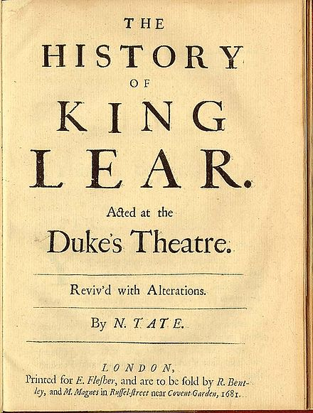

Nahum Tate was born in
Dublin and graduated from Trinity College, Dublin, B.A. 1672. He lacked
great talent but wrote much for the stage, adapting other men's work, really
successful only in a version of King Lear. Although he collaborated with
Dryden on several occasions, he was never fully in step with the
intellectual life of his times, and spent most of his life in a futile
pursuit of popular favor. Nonetheless, he was appointed poet laureate in
1692 and royal historiographer in 1702. He is now known only for theNew
Version of the Psalms of David, 1696, which he produced in
collaboration with Nicholas Brady. Poverty stricken throughout much of his
life, he died in the Mint at Southwark, where he had taken refuge from his
creditors, on August 12, 1715.
Scripture References:
st. 1 = Luke 2:8-9
st. 2 = Luke 2:9-10
st. 3 = Luke 2:11-12
st. 4 = Luke 2:12
st. 5 = Luke 2:13
st. 6 = Luke 2:14
The story of the
shepherds and the angels is told in this famous paraphrase of Luke
2:8-14 by Nahum Tate (b. Dublin, Ireland, 1652; d. Southwark, London,
England, 1715). It was first published in 1700 in a supplement to theNew
Version of the Psalmsby Tate and Nicholas Brady.
Tate's straightforward telling of the nativity story is an example of
paraphrasing at its best: poetry that conveys the text well without
undue liberties or additions and is easy to understand and sing. Adopted
by virtually all hymnals since its writing, this narrative song simply
tells the Christmas gospel as the shepherds heard it. A similarly
narrative song based on the same gospel text is at 339.
Although born in
Ireland, Tate spent all of his adult life in London, where he was known
primarily as a playwright and poet. Most of his dramas were not original
plays but adaptations of the works of others. Honored by being named
poet laureate in 1692, Tate wrote poetry celebrating important national
events. He was also appointed the official royal historian in 1702.
Intemperate throughout his life, Tate died while living at the Suffolk
House, a refuge for debtors in London, In the history of church music
Tate and Brady are known for theirNew Version(1696),
which replaced the "Old Version" of Sternhold and Hopkins published by
John Day in 1562. Reprinted frequently and supplemented with some hymns,
the new versification became the standard psalter of the Church of
England and influenced psalmody well into the nineteenth century.
Liturgical Use:
Christmas; stanza 5 makes an excellent doxology for the two Sundays
following Christmas.
--Psalter Hymnal
Handbook
==========================
While
shepherds watched their flocks by night. N. Tate. [Christmas.]
Appeared in theSupplementto theNew
Version, in 1702, in 6 stanzas of 4 lines, and in all later
editions of the same. In full, or in an abbreviated form, it is found in
most hymn-books in English-speaking countries. Original text in theHymnal
Companion. In addition to the original, two additional versions are
in common use:—
1.While humble Shepherds watched their flocks.
This was given in the 1745 Draft of theScottish
Translations and Paraphrases, the opening stanza reading:—
"While humble
Shepherds watch'd their Flocks
in Bethleh'ms Plains by Night,
An Angel sent from Heav'n appear'd
and fill'd the Plains with Light."
The alterations were
confined to this stanza. On its adoption in the revisedDraftof
1751, and again in the authorized issue of theTranslations
and Paraphrases, 1781, the concluding lines of the last stanza
read:—
Goodwill is shewn
by Heav'n to men,
and never more shall cease."
This arrangement of
the text has been in common use for more than 100 years.
2.On Judah's plains as Shepherds kept.
This is found in one or two American collections only.
The original has been translated into several languages. Those in Latin
include; (1) "Pastorum in pecudes noctu vigilante catervâ," by Lord
Lyttelton, 1866; and (2) "Noctivagos. acclinis humo, pastoria pubes," by
C. S. Calverley, both in L. C. Biggs's annotated edition ofHymns
Ancient & Modern, 1867; (3) "Oves dum custodientes," by R. Bingham,
in hisHymnologia Christiana Latina, 1871; and (4)
"Pro grege Pastores vigilabant nocte silenti," by Bishop Wordsworth (St.
Andrews) in hisSeries Collectarum, &c, 1890.
It is the only one of the sixteen
works in the 1700 supplement to still be sung today. It was
published byDavies
Gilbert(London, 1822), andWilliam
B. Sandys(London, 1833).[2]The
carol is sung to a wide variety of tunes, the two most common ones
beingWinchester Oldin the United
Kingdom and a variation on a Handel aria arranged by Lowell Mason in
the United States.
Professor Jeremy Dibble ofDurham
Universityhas noted that "While shepherds watched"
was "the only Christmas hymn to be approved by theChurch
of Englandin the 18th century and this allowed it
to be disseminated across the country with theBook
of Common Prayer."[3]This
was because most carols, which had roots infolk
music, were considered too secular and thus not used in church
services until the end of the 18th century.[4]As
a result of its approved status, many tunes have been associated
with this carol. The editors of theEnglish
Hymnalnote that "it is impossible to print all the
tunes which are traditionally sung to this hymn".[5]
In theUnited
KingdomandCommonwealthcountries,
the standard hymn tune of "While shepherds watched" is "Winchester
Old" (initially simply "Winchester"), originally published inEste's
psalterThe Whole Book of Psalmesfrom
1592. This tune was, in turn, arranged from chapter VIII of
Cambridgeshire composerChristopher
Tye's setting of theActs of the Apostlesin
1553.[4][6]
George Kirbye, anEast
Anglianmadrigalistabout
whom little is known, was employed by Este to arrange tunes featured
in hisThe Whole Book of Psalmesand
it is his arrangement of Tye's work that appears in the psalter to
accompanyPsalm
84"How Lovely is Thy Dwelling Place" with the
melody in the tenor.[7]The
tune and hymn text were probably first published together in an
arrangement byWilliam
Henry MonkforHymns
Ancient and Modernin 1861.[7][8]
David Weyman's adaptation of
"Christmas", taken from anariain
the 1728 operaSiroebyGeorge
Frideric Handelwas arranged by Lowell Mason in
1821, and it is now this version which is most commonly used in theUnited
States. The Hymnal Committee of theUnited
Methodist Church, for example, selected "Christmas" for its
current hymnal, published in 1989, after the previous 1966 edition
had used "Winchester Old".[9]The
Presbyterian Hymnal(1990) and the more recentGlory
to Godhymnal published in 2013 by thePresbyterian
Church (USA)include both the "Winchester Old" and
"Christmas" versions,[10][11]while
the EpiscopalHymnal 1982has
"Winchester Old" and an alternate tune, "Hampton", composed by
McNeil Robinson in 1985.[12]
AmericancomposerDaniel
Readpublished his tune "Sherburne" in 1785, a
popular setting that appeared over seventy times in print before
1810 and is still commonly sung bySacred
Harpsingers. It was set to music in 1812 inHarmonia
Sacra.
It has been set to numerous other
tunes, most commonly "Martyrdom", written by Hugh Wilson in 1800 but
with an arrangement byRalph
E. Hudsonfrom around 1885, and "Shackelford" byFrederick
Henry Cheeswrightfrom 1889. Robert Jackson, parish
organist at All Saints‘ Church,Oldham,Lancashire,
wrote a tune to "While shepherds watched their flocks by night" in
1903 for theWestwood
Moravian Churchthere. Called "Jackson's Tune," it
remains popular in Oldham. A note inThe English
Hymnalmentions "University" and "Crowle" as tunes
to which is occasionally sung.[14]InCornwall,
the carol is popularly sung to "Lyngham", a tune usually associated
with "O
for a Thousand Tongues to Sing". Another tune traditionally used
for it in Cornwall is "Northrop".[15]In
the towns of villages in thePenninesofWest
Yorkshiresuch asTodmorden,
"Shaw Lane" is used. "Sweet Chiming Bells" is an alternative folk
version, commonly sung in South Yorkshire and Derbyshire, which uses
the verses of the hymn but adds a newrefrain.[16]
An arrangement from the 19th century with music by G. W.
Fink. Here the title is given as "While Humble
Shepherds Watched Their Flocks"
The title in the supplement was "Song
of the Angels at the Nativity of our Blessed Saviour", but it has
since become known chiefly by itsincipit.
In Tate's original it appeared asWhilst Shepherds
Watched Their Flocks(i.e. 'whilst' not 'while'),
but most modern hymn books print "While".[8]
A 19th-century version by Gottfried W.
Fink wasWhile humble shepherds watched their flocksand
other rewritten passages (see illustration).The
Hymnal 1982published in the United States also
contained a number of other modernisations, including dropping "Hallelujah"
as the final line.[17]
"While Shepherds Watched Their Flocks"
by Nahum Tate;
The United Methodist Hymnal, 236
While shepherds watched their flocks by night,
All seated on the ground,
The angel of the Lord came down,
And glory shone around.
Congregations sometimes have difficulty giving up a familiar older hymnal
when a new one arrives on the scene. In many ways, the story of this hymn
from the late seventeenth and early eighteenth century is also about the
transition between old ways of congregational singing giving way to new
trends. Any comparisons with changes in congregational song practice today
are invited.
We sing many Christmas hymns and carols that offer a poet's personal or
theological reflections on the season, but relatively few attempt to sing
the biblical witness of the nativity verbatim. "While Shepherds Watched
Their Flocks," Nahum Tate's metrical version of Luke 2:8-14, offers us a way
to sing the Christmas story virtually direct from Scripture. In some
editions, the hymn is entitled, “Song of the Angels at the Nativity of our
Blessed Saviour.”
With Nicholas Brady (1659-1726), a canon at Cork Cathedral in Ireland, Tate
publishedA
New Version of the Psalms of Davidin 1696. This
collection was the "new version" because it attempted to supplant the "old
version" by Thomas Sternhold (d. 1549) and John Hopkins (1520/1521-1570)
titledThe
Whole Booke of Psalmsthat had been published in 1562,
over 140 years earlier. TheSupplement
of 1700, a supplement to the “new version” in which our hymn appears,
was bound with the Anglican Church'sBook
of Common Prayer, giving it an even greater influence for years to
come. King William III approved this “new version” for worship.
In this day, singing a congregational song based on anything but the psalms
was very unusual. Psalm singing was the usual practice during the era of
Nahum Tate (c. 1652-1715) in England. In those days, Tate would have been
known, among other things, as the writer of metrical psalms — hymns that
paraphrased a psalm directly from Scripture and placed it in a poetic form
with rhyme and a specific meter — with the goal of neither adding nor
deleting any content from the text of the psalm.
“While Shepherds Watched Their Flocks” is unusual for its day in that it
follows this practice, but rather than being based on a psalm, it is a
metrical paraphrase of Luke’s account of the nativity. The practice was
based on those churches following the lead of John Calvin (1509-1564), whoseGenevan
Psalter(1551) provided congregations with all they needed
for singing in public worship.
Furthermore, the practice was to sing the psalms unaccompanied in unison. A
worship leader would "line out" each line of the hymn; that is, the leader
would sing each line in advance so that the congregation could hear the
melody and repeat it. TheSupplement
to the New Version of Psalmsby Dr. Brady and Mr. Tate
(1700) indicates a slight loosening of the stranglehold of metrical psalmody
by also including, in addition to this Christmas hymn, hymns for Easter and
for Holy Communion.
This metrical paraphrase was included in the influential ScottishTranslations
and Paraphrases(1745) almost 50 years later. The 1781
edition of this collection reflects the influence of Tate’s paraphrase but
made some changes:
While humble shepherds watch’d their flocks
in Bethleh’ms plains by night.
An angel sent from heav’n appear’d
and fill’s the plains with light.
Tate’s paraphrase, though straying too far from Scripture for some, was
closer to the wording found in the King James Version, an important
qualification of earlier metrical versions. This later paraphrase, while
still close, indicates a loosening of the metrical paraphrase standards,
allowing for a little more flexibility. All six of the original stanzas
appear inThe
United Methodist Hymnalwith only minor adaptations for
the purposes of inclusive language.
Between the publication of the “old version” and “new version,” the English
language had undergone considerable changes. The “old version” of 1562 was
based on the translation of the psalms by Miles Coverdale (1488-1569), whose
lyrical cadences shape the Psalter used in theBook
of Common Prayerin the Anglican tradition to this day.
The “new version” appeared after the publication of the King James Bible was
completed in 1611. Thus, the standard for the Scripture upon which a
metrical psalm would be based shifted.
It is interesting to note that the “new version” was not greeted unanimously
with acclaim. Like Tate’s other literary endeavors, it received its share of
criticism. Just as today’s singers develop affection for particular hymns
and do not appreciate changes, many of those who loved the then antiquated
(nearly 150 years old) and, at times, clunky metrical psalms of the
Sternhold and Hopkins’ “old version” did not take kindly to Tate’s and
Brady’s work. As a result of the critiques received, Tate published a
defense of the “new version” in 1710 titledAn
Essay for Promoting of Psalmodyin which he claimed that
faithfulness to the “original” Scripture must be balanced by “elegance.” In
this defense, he wrote, “Is not an Elegant Manner of Translating these
Divine Odes, as just a debt to the Psalmist, as to any Other Poet?” Just as
parishioners sometimes find it difficult to give up a beloved old hymnal for
a new one, given time, they usually embrace the newer hymnal. Tate’s and
Brady’s “new version” stood the test of time and remained in use in the
Anglican Church over 200 years, well into the nineteenth century.
The 1700Supplementindicated
that this text might be sung “to any of the Tunes of Common Measure [Common
Meter, 8.6.8.6], printed toward the end of this Supplement.” One of those
tunes was WINCHESTER by cathedral chorister Thomas Ravenscroft (b. ?1589 –
d. ?), now known as WINCHESTER OLD. British churchgoers prefer the venerable
WINCHESTER OLD (Hymn 470 inThe
United Methodist Hymnal). One can often hear this text sung to that
tune on Christmas Eve in broadcasts of the King's College (Cambridge)
Service of Nine Lessons and Carols.

As is often the case, hymn singers in the United States know this text to a
tune that is different from that of our British friends. CHRISTMAS, the tune
used most often on this side of the Atlantic, is based upon a soprano aria
by G. F. Handel (1685-1759). The famous Boston music educator Lowell Mason
(1792-1872) used a setting of this tune that he found in James Hewitt'sHarmonia
Sacra(1821) in hisBoston
Handel and Haydn Society Collection of Church Music(1821),
and this has been the favorite on this side of the Atlantic since then.
Because of the melody, the last phrase of each stanza must be repeated,
giving the feeling of a bit more space in the reciting of the narrative.
Nahum Tate was born in Dublin and educated at Trinty College, Dublin (BA
1672), but moved to London in 1688 to enter the literary circles there. He
became friends with John Dryden (1631-1700), whose poem “Fairest Isle, All
Isles Excelling” served as the inspiration for the opening line of Charles
Wesley’s famous hymn, “Love Divine, All Love’s Excelling” a generation
later. Tate published poems and prepared translations of ancient classic
works by Roman masters Ovid and Juvenal. He also wrote for the stage,
including a revision of the end of Shakespeare’sKing
Lear(c. 1606), so that it may conclude happily (!), to
which British professor of literature and hymnologist J. Richard Watson
commented that this was “not such a silly idea as it sounds: Dr. [Samuel]
Johnson approved of it, and it was played as the normal stage version until
Victorian times” (Watson,Canterbury
Dictionary of Hymnology). Tate’s literary efforts earned him the title
of poet laureate in 1692 and royal historiographer in 1702.
J. Richard Watson. "Nahum Tate."The
Canterbury Dictionary of Hymnology.Canterbury Press,
accessed February 25, 2018,http://www.hymnology.co.uk/n/nahum-tate.
This nativity hymn was first published in
A Supplement to the New Version
of Psalms (London: J. Heptinstall, 1700). The psalm paraphrases in
the New Version (1696/8)
were the collaborative work of
Nahum Tate
and
Nicholas
Brady, but the supplemental hymns are often credited to
Nahum Tate alone, including “While shepherds watched their flocks by
night” (Fig. 1), for reasons which are unclear and unproven. His name
was not directly attached to any hymns in the supplement. The proper
attribution should be to the collection or to Tate & Brady, not to Tate
individually.
Fig. 1.
Supplement to the New Version of Psalms (London: J.
Heptinstall, 1700).
The original text was given in three stanzas of eight lines, without
music. The text was labeled “Song of the Angels at the Nativity of our
Blessed Saviour” and it was intended as a paraphrase of Luke 2:8–15. As
a paraphrase, it is faithful to the biblical text, especially in
comparison to the King James Version (1611). Its fidelity and simplicity
are have allowed it to retain its place in hymnals for over 300 years.
Albert Edward Bailey called this paraphrase “perhaps the happiest we
have of the appearance of the angels to the shepherds.”[1] Hymnologist
J.R. Watson said, as a narrative biblical paraphrase, it “carries the
story with unobtrusive strength and a grand simplicity.”[2] Reformed
hymn scholar Bert Polman said this “straightforward telling of the
nativity story is an example of paraphrasing at its best: poetry that
conveys the text well without undue liberties or additions and is easy
to understand and sing.”[3]
II. Text:
Alteration
One notable alteration still in use, especially in Scotland, is “While
humble shepherds watched their flocks.” This modification first appeared
in Translations and Paraphrases
of Several Passages of Sacred Scripture (Edinburgh: Robert Fleming,
1745 | Fig. 2). The first stanza was completely reconstructed, but the
rest contained only minor changes, including shifts from “mighty dread”
to “sudden dread,” and “swathing bands” to “swaddling bands.”
Fig. 2.
Translations and Paraphrases of Several Passages of
Sacred Scripture (Edinburgh: Robert Fleming, 1745).
The collection was assembled by a committee from the Church of Scotland,
and they seemed to have had an aim in keeping with the character of this
paraphrase:
The use for which they were intended required simplicity and plainness
of composition and style. The committee who prepared them chiefly aimed
at having the sense of Scripture expressed in easy verse, such as might
be fitted to raise devotion, might be intelligible to all, and might
rise above contempt from persons of better taste.
This revision of the angelic hymn was further modified in the 1756
edition (Fig. 3), changing “plains” to “fields” in stanza 1, and the
last two lines became “Goodwill is shown by heav’n to men / and never
more shall cease.” These changes were carried over into subsequent
editions of 1765, 1771, and 1781.
Fig. 3.
Translations and Paraphrases of Several Passages of
Sacred Scripture (Church of Scotland, 1756).
III. Tunes
1. ST. JAMES
Starting with the 6th edition of the
Supplement to the New Version
(1708), this text carried a tune recommendation, “To St. James’s tune or
any other tune of 8 and 6 syllables.” ST. JAMES was by
Raphael
Courteville, first published in
Select Psalms and Hymns for the
Use of the Parish-Church and Tabernacle of St. James’s Westminster
(London: J. Heptinstall, 1697 | Fig. 4). In the 1708
Supplement, it had appeared
with the New Version of
Psalm 19 (Fig. 5). This recommended pairing did not materialize: the
only time “While shepherds watched their flocks by night” appeared in
print with ST. JAMES was in Robert Barber’s
A Book of Psalmody (London:
William Pearson, 1723).
Fig. 4.
Select Psalms and Hymns for the Use of the Parish-Church
and Tabernacle of St. James’s Westminster (London:
J. Heptinstall, 1697).
Fig. 5.
A Supplement to the New Version of the Psalms, 6th
ed. (Savoy: John Nutt, 1708).
2. SHERBURNE
Among the more notable early tune pairings, especially in the United
States, is SHERBURNE by Daniel Read, from his
American Singing Book (1785
| Fig. 6). This tune, with its four-part, staggered polyphony, is called
a fuguing tune. The melody
is in the tenor part. This combination of text and tune appeared 36
times through 1820.
Fig. 6. Daniel Read,
The American Singing Book (New Haven: Daniel Read,
1785).
3. CHRISTMAS
Another tune from the same time period sometimes associated with this
text is CHRISTMAS, adapted from the aria “Non vi piacque ingiusti Dei”
in Act 2 of the opera Siroe
(1728 | Fig. 7) by
George
Frideric Handel (1685–1759).
Fig. 7. Siroe:
An Opera (London: J. Cluer, 1728).
Handel’s aria was adapted as a hymn tune by Dr. Samuel Arnold for
The Psalms of David for the Use
of Parish Churches (London: John Stockdale & George Goulding, 1791
| Fig. 8). In that collection, the melody (appearing in the treble
part), clearly labeled “Handel,” was set to a paraphrase of Psalm 72
from the New Version by
Tate &
Brady (1696/8).
Fig. 8.
The Psalms of David for the Use of Parish Churches (London:
John Stockdale & George Goulding, 1791). Melody in the
treble part.
John Wilson, in an article for
The Hymn, explained Arnold’s influence in this adaptation:
Dr. Arnold, a prolific and successful composer for the stage, was then
organist and composer for the Chapel Royal. He was also busy editing the
complete works of Handel, and so was just the man to pick out the
attractive soprano aria “Non vi piacque” in the half-forgotten opera
Siroe, and to see its possibilities for a hymn tune. The result was our
[Fig. 4], allocated to Tate and Brady’s version of a psalm associated
with the Christmas season. This became the now familiar tune CHRISTMAS,
known in Britain as LUNENBURG.
The arrangement is an ingenious one, calling for the last line of each
stanza to be repeated, so there are five phrases. The first three come
directly from the singer’s opening phrases. To find the fourth, we have
to jump ahead for 16 measures and end with the soloist’s final phrase.
Handel, therefore, is not to blame for those nine consecutive E’s in the
bass part; our big jump occurs in the middle of them. In any case,
passages on a pedal bass were not uncommon in hymn tunes of the
period.[3]
Arnold’s edition, The Works of
Handel, was the first attempt at compiling Handel’s compositions,
eventually released in 180 parts between 1787 and 1797, although
ultimately not including Siroe.
In his 1791 collection of tunes, 27 were credited to Handel. This
adapted hymn tune was first dubbed CHRISTMAS in Amos Blanchard’s
Newburyport Collection of Sacred,
European Musick (Exeter: Ranlet & Norris, 1807). It has also gone
by other names, including LUNENBURG, SIROE, DELAWARE, HARLEIGH, and
SAXONY. The first known pairing of this text and tune appeared in
Hymns for the Use of the
Methodist Episcopal Church with Tunes (NY: Carlton & Porter, 1857 |
Fig. 9).
Fig. 9.
Hymns for the Use of the Methodist Episcopal Church with
Tunes (NY: Carlton & Porter, 1857). Melody in the
top part of the second staff.
4. WINCHESTER OLD
The tune known as WINCHESTER OLD was first printed in Thomas Est’s
Whole Booke of Psalmes
(London: Thomas Est, 1592 | Fig. 10), where it was set to a paraphrase
of Psalm 84 by John Hopkins. In this printing, the name “G. Kirby”
refers to the arranger, George Kirby (ca. 1560–1634), not the composer,
who is unidentified and unknown.
Fig. 10.
Thomas Est, The Whole Booke of Psalmes (London:
Thomas Est, 1592). Melody in the tenor part.
Scholars regard this tune as belonging to a family of similar antecedent
tunes bearing many of the same qualities. The oldest example offered as
a possible precursor is from the
Actes of the Apostles (1553) by Christopher Tye (ca. 1497–1572),
especially the tune for Chapter 2 (Fig. 11), “When that the fifty day
was come,” a song about Pentecost (Whitsunday), or possibly the second
half of the tune for Chapter 8, “The death of Steven did Saul comfort.”
Fig. 11. Christopher Tye,
The Actes of the Apostles
(1553), melody in the meane part.
For a more detailed discussion of related antecedents to this tune, see
the study by Nicholas Temperley, “Kindred affinity in hymn tunes,”
The Musical Times, vol. 113,
no. 1555 (Sept. 1972), pp. 905-909. This tune was named WINCHESTER by
Thomas Ravenscroft in The Whole
Booke of Psalmes (1621).
The pairing of “While shepherds watched their flocks by night” with
WINCHESTER OLD traces to the first edition of
Hymns Ancient & Modern
(1861) and has become very common.
5. CAROL
See also the tune by Richard Storrs Willis, intended for “While
shepherds watched their flocks by night” but now more commonly known as
a setting for
“It came upon the midnight clear.”
by CHRIS FENNER
for Hymnology Archive
28 November 2019 rev. 11 December 2019
Footnotes:
Albert Edward Bailey, “While shepherds watched their flocks by
night,” The Gospel in Hymns
(NY: Charles Scribner’s Sons, 1950), p. 42.
J.R. Watson, “While shepherds watched their flocks by night,”
An Annotated Anthology of
Hymns (Oxford: University Press, 2002), p. 119.
Bert Polman, “While shepherds watched their flocks by night,”
Psalter Hymnal Handbook
(Grand Rapids: CRC, 1998), p. 350.
Related Resources:
John Julian, “While shepherds watched their flocks by night,”
A Dictionary of Hymnology
(London: J. Murray, 1892), p. 1275:
Google Books
J.M. Coopersmith, “The First Gesamtausgabe: Dr. Arnold’s Edition of
Handel’s Works,” Notes, vol.
4, nos. 3-4 (June–Sept. 1947), pp. 277–291, 438–449:
JSTOR
Paul Hirsch, “Dr. Arnold’s Handel Edition, 1787–1797,”
Music Review, vol. 8 (May
1947), pp. 106–116.
Albert Edward Bailey, “While shepherds watched their flocks by night,”
The Gospel in Hymns (NY:
Charles Scribner’s Sons, 1950), p. 42.
Maurice Frost, English & Scottish
Psalm & Hymn Tunes (London: SPCK, 1953), no. 103, p. 136.
Erik Routley, “While shepherds watched,”
The English Carol (London:
Herbert Jenkins, 1958), pp. 156–159.
Nicholas Temperley, “Kindred affinity in hymn tunes,”
The Musical Times, vol. 113,
no. 1555 (Sept. 1972), pp. 905–909:
PDF
John Wilson, “Handel and the Hymn Tune: II—Some Hymn Tune Arrangements,”
The Hymn, vol. 37, no. 1
(January 1986), p. 26:
HathiTrust
Richard Watson & Kenneth Trickett, “While shepherds watched their flocks
by night,” Companion to Hymns and
Psalms (Peterborough: Methodist Publishing House, 1988), pp.
102–103.
Hugh Keyte & Andrew Parrott, “While shepherds watched their flocks by
night,” New Oxford Book of Carols
(Oxford: University Press, 1992), pp. 134–145.
Carlton R. Young, “While shepherds watched their flocks by night,”
Companion to the United Methodist
Hymnal (Nashville: Abingdon, 1993), p. 705.
Nicholas Temperley, “While shepherds watched their flocks by night,”
The Hymnal 1982 Companion,
vol. 3A (NY: Church Hymnal Corp., 1994), pp. 181–183.
Raymond Glover, “SIROE,” The
Hymnal 1982 Companion, vol. 3B (NY: Church Hymnal Corp., 1994), pp.
1013–1014.
Bert Polman, “While shepherds watched their flocks by night,”
Psalter Hymnal Handbook
(Grand Rapids: CRC, 1998), pp. 350–351.
J.R. Watson, “While shepherds watched their flocks by night,”
An Annotated Anthology of Hymns
(Oxford: University Press, 2002), pp. 119–120.
A hymn which describes in poetic form the scene where the shepherds were abiding
in the field keeping watch over their floc by night following the birth of Jesus
Christ is “While Shepherds Watched Their Flocks.” The text was written by Nahum
Tate, who was born at Dublin, Ireland, in 1652, the son of a minister in the
Church of England named Faithful Tate (originally Teate) who also authored some
religious verse. After graduating from Trinity College in Dublin, Nahum went to
London, England, in 1668 to seek literary fame and wrote for the stage.
Lacking much unique creative talent of his own, he mainly adapted the work of
others. Appointed poet laureate in 1692, his chief claim to fame was his
collaboration with Nicholas Brady in theNew
Version of the Psalms of Davidin 1696, which was dedicated to
King William III, with the first supplement in 1698. ThisPsalterwas
used for more than 200 years in the Church of England. Most all of Tate’s hymns
in this collection have been forgotten except this metrical version of Luke
2:8-14, originally entitled “Song of the Angels, at the Nativity of our Blessed
Saviour,” which was first published in the 1700 edition of Supplement (some
sources give the publication date of the Supplement as 1702). This supplement
contained metrical paraphrases of great Biblical hymns (Benedictus,Magnificat,
andNunc
dimmitis); several medieval hymns (Veni
CreatorandTe
Deum); hymns for morning, evening, and communion; and several metrical
paraphrases of scripture passages other than the Psalms.
Although Tate was appointed royal historiographer in 1702, he failed to achieve
financial success, and because of his own intemperance and carelessness, he was
often in dire straits. His death occurred on Aug. 12, 1715, in the mint at
Southwick, London, England, which was a refuge for debtors at the time. TheScottish
Translations and Paraphrasesof 1745 altered the opening
stanza to read:
“While humble Shepherds watched their flocks In Bethlehem’s plains by night,
An Angel sent from Heaven appeared And filled the plains with light.”
John Julian noted, “The alterations were confined to this stanza.” A couple of
other Psalm paraphrases from the New Version, “Through All the Changing Scenes”
(Psalm 34) and “As Pants the Hart for Cooling Streams” (Ps. 42), have been
included in some modern hymnbooks and are sometimes attributed as the work of
Tate. “While Shepherds Watched Their Flocks” has been set to many tunes. One
(Avon or Martyrdom) by Hugh Wilson has been used with many other hymns as well,
including “That Dreadful Night” and in many of our books a metrical version of
Psalm 143 beginning “When Morning Lights the Eastern Skies.” Another (Christmas)
from George Frederick Handel, the one I grew up hearing with this text, has also
been used with other hymn, especially in our books with Philip Doddridge’s
“Awake, My Soul, Stretch Every Nerve.” Richard Storrs Willis composed the tune
(Carol) now associated almost exclusively with Edmund Hamilton Sears’s “It Came
Upon a Midnight Clear” originally for Tate’s words.
Still another tune (Prince of Peace) which can be used was composed by Newton W.
Allphin (1875-1972). Apparently, he produced it for use with John Morison’s “To
Us a Child of Hope Is Born” but it fits “While Shepherds Watched Their Flocks.”
Among hymnbooks published by members of the Lord’s church during the twentieth
century for use in churches of Christ, the text appeared in the 1937Great
Songs of the Church No. 2(with the Wilson tune) edited by E.
L. Jorgenson; the 1940 CompleteChristian
Hymnal(with the Handel tune) edited by Marion Davis; the 1963Christian
Hymnal(with the Handel tune) edited by J. Nelson Slater; and
the 1978Hymns
of Praise(with the Wilson tune) edited by Reuel Lemmons.
Today it may be found in the 1971Songs
of the Church, the 1990Songs
of the Church 21st C. Ed., and the 1994Songs
of Faith and Praise(all with the Wilson tune) all edited by
Alton H. Howard; and the 1986Great
Songs Revised(with the Handel tune) edited by Forrest M.
McCann. Interestingly enough, almost all of our books that include the
song have had only stanzas 1, 2, and 6 of it (TheComplete
Christian Hymnaladded stanza 3). Allphin’s tune is used with
“To Us a Child of Hope Is Born” in Howard’sSongs
of the Church.
The song is a simple retelling of the Biblical account of how the angels
appeared to the shepherds of Bethlehem to announce the birth of Jesus Christ.
I. Stanza 1 says that the angel came down
“While shepherds watched their flocks by night, All seated on the ground,
The angel of the Lord came down, And glory shone around.”
A. Shepherding was a very common occupation in first century Palestine, and
Jesus used it to illustrate His relationship with His followers: Jn 10:11
B. The word “angel” means messenger, and God often used His spiritual hosts to
deliver messages to certain people: Lk. 126
C. It is possible that on other occasions when angels appeared to people, the
glory of the Lord, perhaps a special light, shone around: Lk. 2:9
II. Stanza 2 says that the angel brought them tidings of great joy
“‘Fear not!’ said he, for mighty dread Had seized their troubled mind;
‘Glad tidings of great joy I bring, To you and all mankind.'”
A. Quite often, the appearance of an angel brought a sense of fear or dread on
people who saw them: Lk. 1:11-12
B. Therefore, it was frequently necessary for angels to tell those to whom they
appeared to “fear not”: Lk. 1:13
C. This angel came to bring glad tidings of great joy: Lk. 2:10
III. Stanza 3 says that the angel pointed out that the Christ was born
“‘To you in David’s town, this day, Is born, of David’s line,
The Savior, who is Christ the Lord, And this shall be the sign.'”
A. David’s town, of course, was Bethlehem: Lk. 2:4
B. The One whose birth was being announced was of David’s line: Matt. 1:1
C. Peter also preached that Jesus was both Lord and Christ: Acts 2:36
IV. Stanza 4 says that the angel told them how to find the Babe
“‘The heavenly Babe you there shall find To human view displayed,
All meanly wrapped in swathing bands, And in a manger laid.'”
A. Jesus, while begotten miraculously, was a Babe, a child, born of woman: Gal.
4:4
B. The sign for the shepherds was that they would find the Babe wrapped in
swaddling clothes: Lk. 2:12
C. He would be lying in a manger because there was no room for Mary and Joseph
at the inn: Lk. 2:7
V. Stanza 5 says that the angel was joined by the heavenly host
“Thus spake the seraph, and forthwith Appeared a shining throng
Of angels praising God, who thus Addressed their joyful song.”
(or, “Of angels praising God on high, Who thus addressed their song”).
A. The angel who announced Christ’s birth is not specifically identified as a
seraph, but we do know that seraphim were angelic like beings which are
sometimes thought of as a particular order of angels: Isa. 6:1-6
B. Then with this angel there suddenly appeared a multitude of the heavenly
host: Lk. 2:13
C. It appears that one of the functions of angels is to praise Christ: Rev.
5:11-12
VI. Stanza 6 says that the angel and the heavenly host gave glory to God
“‘All glory be to God on high, And to the earth be peace:
Good will henceforth, from heaven to men, Begin and never cease!'”
A. We should always seek to give glory, in the sense of praise and adoration,
to God on high: Rev. 4:9-10
B. God wants there to be peace on earth, specifically His peace which surpasses
all understanding: Phil. 4:7
C. This was the message that the angels brought to the shepherds: Lk. 2:14
CONCL.:
Many brethren through the years have objected to including songs about the birth
of Christ in our hymnbooks, either possibly believing that it is unscriptural to
sing hymns that relate to the subject or, perhaps more likely, fearing that they
will be thought of as “Christmas” carols and misused. However, while admitting
the need for wisdom in how and when we might use them, I have never found any
scriptural argument against singing songs related to the birth of Christ any
more than those related to His life, death, resurrection, and second coming.
Many children’s Bible class teachers find that singing songs about the birth of
Jesus helps children to understand the subject when it is taught in children’s
Bible classes. Christ’s birth, while misunderstood and misapplied by many in the
religious world, is certainly a Biblical subject, so there can be nothing wrong
with being reminded of what happened “While Shepherds Watched Their Flocks.”


{kind=link}
{kind=link}